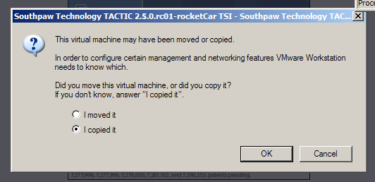
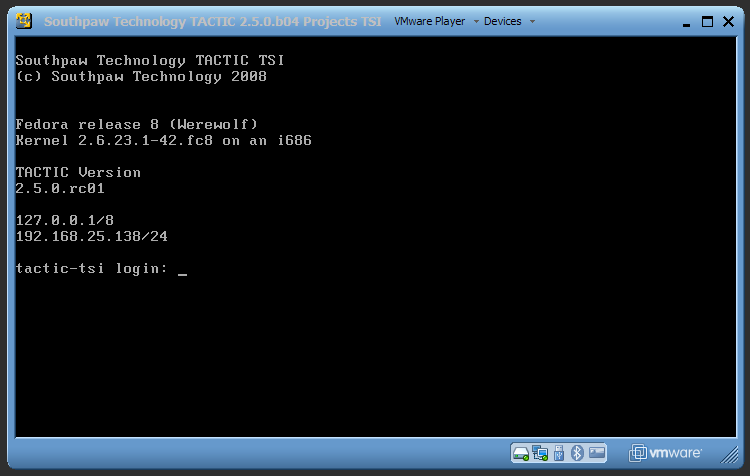

The TACTIC VM lets you run a virtual machine on Windows or Linux, and provides an easy way to evaluate the TACTIC platform without changing your operating system. The VM requires VMware Player for Windows or Linux,
Q. Will my computer be adversely affected if I run VM ?
A. Your computer will not be affected by the VM. Aside from requiring a large amount of memory (the TSI unzips into a folder needing at least 5-10 GB), the TACTIC virtual machine does not interact with your host machine. At the end of the evaluation period, you can either continue using the TSI for production, migrate your data to a new full server install or simply delete the TSI directory. (Note that if you delete the TSI directory, all evaluation data you entered into the TACTIC evaluation is destroyed.)
Request and download the TACTIC Server Image (TSI)
The TSI is available on request from Southpaw Technology. When you contact the Southpaw sales or support representatives and set up an evaluation account, they will send you a URL and login/password information so you can begin the trial.
For more information, visit:
Download VMware Player or server
The VMware player is a license-free player you can download from
http://vmware.com/download/player/ [http://vmware.com/download/player/]
VMware currently supports Microsoft Windows XP, Windows Vista and many flavors of Linux. To streamline the evaluation process, we chose the Fedora Linux-based operating system to create the TSI virtual machine image. (Although you will be running the VM on any of many supported operating systems, you will see the Fedora Linux when you use the VM.)
Download VMware Server
The VMware server is a full-featured service for Virtual machines
VMware server is a service that allows users to run VMs silently in the background. No window is needed, and the server can be configured to run the VM on host machine startup. Additionally, there are several interesting options that allow for more flexible operation of a VM.
- Web UI
- Pause The ability to pause a VM is useful for cycling the VM host.
- Snapshot a VM The VMs current state can be saved and recalled in the future. Note that if the VM is reverted to a snapshot, then any changes that have occurred since the snapshot was taken will be permanently deleted.
- Change hardware The VM can be modified to change hardware. For example, another network interface, or a USB interface
Note
The instructions for running a VM can be found in the VMware server documentation. Running the VM from VMware player is covered in this document.
Web Browser
We recommend you use Mozilla Firefox as your web browser to access the TSI. You can download Firefox at:
http://www.mozilla.com/en-US/firefox/ [http://www.mozilla.com/en-US/firefox/]
Login Info
There are three sets of login info to remember:
VM Linux user
user: root password: south123paw 2. TACTIC UI in browser
user: admin password: tactic 3. Windows Samba share
user: apache password: south123paw
Networking
When VMware software is installed, several new network interfaces can become available, depending on the options selected during the installation process. Although any one of the interfaces can be used to connect to the VM, it is advised to install all three network interfaces, as this allows the most flexibility
Note
Successful operation of a virtual machine may require some input from system administrators within a network environment.
NAT
- If it becomes necessary to isolate the VM on a host machine, then the NAT interface can be used to connect to the VM.
- Internet and LAN connectivity can be utilized through the NAT interface if the host machine is connected to an external network such as the internet or a LAN. Allowing the VM to communicate with a LAN may require changes to the routing system on the LAN. If this is a requirement, then bridged networking may be the better option.
- NAT is a complete network that originates at the host machine, and is a self-contained router with DHCP services. The VM, once run, will usually ask the host machine for an IP address to assign to a network interface. The host machine can then connect to the VM interface through this IP.
Bridged
- If there are machines other than the host machine that are required to connect to the VM, then the bridged connection should be used.
- The only requirement that bridged networking has is that there are appropriate services for the operation of the interface, such as DHCP on the host machines network. If these services do not exist, then the VM network interface needs to have manually set options.
Host Only
- To isolate the TSI completely, the “Host Only�? option can be used.
- Host Only is a complete network that originates at the host machine, and is a self-contained router with DHCP services. The VM, once run, will usually ask the host machine for an IP address to assign to a network interface. The host machine can then connect to the VM interface through this IP.
- The VM is completely isolated from the host machines LAN. There is no network connectivity, therefore no LAN or internet will be available on the VM.
After you start up the VMware Player, click on the Open option to browse for a virtual machine.

Browse to where the unzipped VM is. Open the TACTIC_VM_3.8.0.v04.vmx
file. The TSI will start up in the VMware Player.
When you first start the VM, you are presented with a window asking whether the virtual machine was moved or copied. Click the "I copied it" button.

Start-up messages scroll by after the Linux kernel boots in the VM window. After the boot-up is completed, you will see this prompt:

If you see this prompt, the TACTIC VM has started up correctly. If it does not show an IP address (for example, a number like "192.168.25.138"), it means the virtual machine has not picked up an IP address from a DHCP server. This IP address is required, so you must contact your IT department to fix this situation. (Refer to the Troubleshooting Section.)
Write down the IP address and any names you see such as "localhost.localdomain". (You will need this information in a next step.)
In special evaluation situations, there is a requirement for more disk space than has been allocated for a standard evaluation (i.e. a large amount of assets are to be stored, then the TSI "assets partition" can be expanded.
Steps to expand disk space on a VM
Shut down TACTIC
To shut down TACTIC, issue the command
service tactic stop 2. Unmount the "TACTIC" drive
umount /home/apache 3. Run the logical Volume expansion tool
lvextend -L+2G /dev/mapper/VolGroup00-LogVol00
This example command resizes the logical volume by +2 G, as seen in the command itself. The volume can be expanded to the total size of the virtual disk. 4. Run the filesystem consistancy checker to make sure the filesystem is ok
e2fsck -f /dev/mapper/VolGroup00-LogVol00 5. Resize the filesystem on the logical volume
resize2fs /dev/mapper/VolGroup00-LogVol00 6. Re-mount the "assets" drive
mount /home/apache/assets
Restart TACTIC
service tactic start
To make your evaluation easier, the TSI uses passwords that are easy to guess and a Samba share. This could cause security issues, so your IT department must be aware of your use of the TSI.
Tactic Samba Network Details
Workgroup | Southpawtech |
Machine | TSI 2.0.0 |
Share | Tactic |
Share User | Apache |
Share Password | south123paw |
If at any point during the usage of the VM there is a need to reset the VM back to its original state, simply delete or archive the directory with the TSI data, and re-expand the zip file that was downloaded from the community site.
Your TACTIC VM server is set up.
Contact your TACTIC Representative for support details at support@southpawtech.com
The IP address does not show up when I start up the VM.
It is possible that an IP address was not assigned because your host machine is not connected to a network. Or, you have a special network configuration that may require one of the following settings: * Network with DHCP: bridged * Network without DHCP: NAT * No network: host-only
*_Changing Windows Special Network Configurations*_
In the top right corner of your VMware player, click on the down arrow beside the Ethernet button and choose host-only , NAT, or bridged. Make sure the Connected menu item is checked.
Changing Linux Special Network Configurations
In the top right corner of your VMware player, right-click on the Ethernet button and choose host-only, NAT, or bridged. Make sure the Connected menu item is checked.
If the problem persists, refer to the VMware Player documentation by pressing F1. 2. I do not remember the IP address of the VMware virtual machine.
In the VMware player, run the following command in the shell:
ifconfigThe IP is the internet address; for example, "192.168.14.101."
Refreshing the IP Address
If you change the Ethernet settings, you may need to restart the network card in the VM. First, you will need to know its number: run the command
ifconfigin the VM shell. You should see a name similar to "ethX", where X is the arbitrary number of the interface. To restart "ethX", run the following commands:ifdown ethXifup ethXI get a proxy error in my browser that looks like the following:
Proxy Error The proxy server received an invalid response from an upstream server. The proxy server could not handle the request /POST /tactic/admin/ <http://192.168.14.113/tactic/admin/>/ Reason: *Error reading from remote server
This message tells you the TACTIC service has stopped. If you are running other processes on port 80 (for example, Skype), this can cause a problem with the TACTIC service. Stop the conflicting service. Then restart TACTIC in the VM by logging in as root and running the command:
`service tactic start `
To transfer data from one VM to another, you need to do the following:
In the old TSI VM shell:
cd /home/apache
pg_dumpall -U postgres -c > tactic_database.sql
In your host machine assuming windows, start a new window of Windows Explorer in the address, type in:
\\<your old VM IP address>
when prompted for uid, password, type in :
apache
south123paw
navigate into the apache folder, you should see the file tactic_database.sql, assets folder and projects folder
You need to move the old VM’s tactic_database.sql, assets folder and projects folder to the same location of the VM you just downloaded and installed.
Same as above, open a new windows explorer, but type in the new VM IP address and carry out the copying
In the new TACTIC VM shell, assuming you have copied the tactic_database.sql, assets folder and projects folder in the new IP from the VM, Type in:
dropdb -U postgres sthpw
psql -U postgres < tactic_database.sql
Upgrade the TACTIC database in the VM according to the version you are upgrading to
Now you can just shut down the old VM by closing the VMware player window